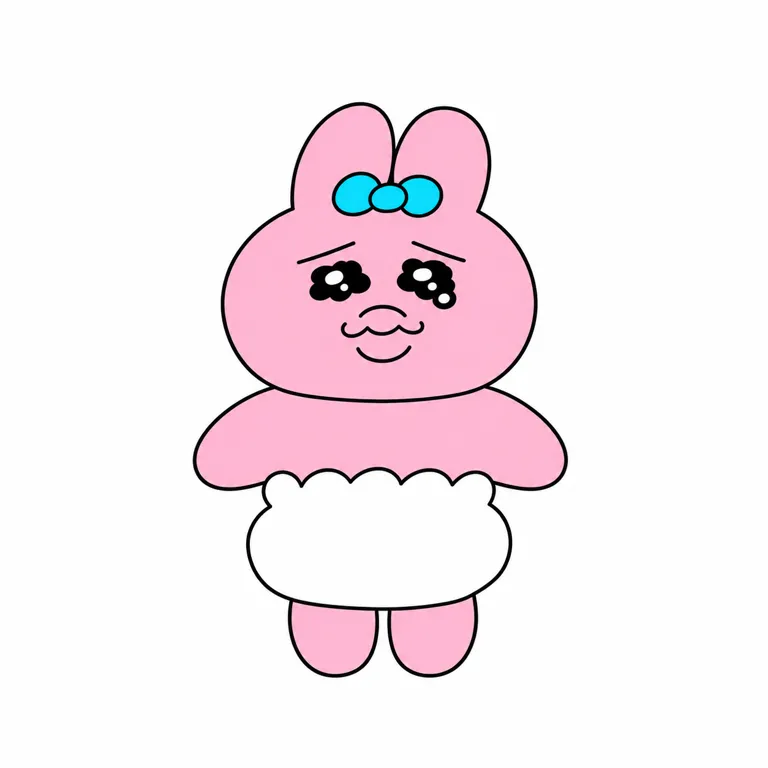
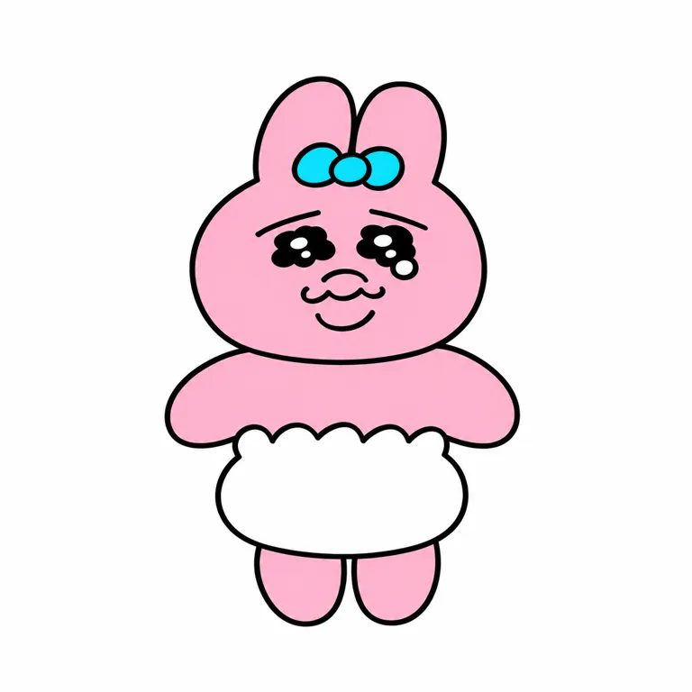

V01左面颊
V01 [200, 200] @ [64, 83]STANDARD STUDY · 2026-10-29
内裤兔 Opanchu Usagi
不是“别难过”，而是“我也不太顺”。
把不顺利变成可继续发生的喜剧情节，让观众想照顾它；授权把同一关系带到不同产品。创作意图和用户购买原因分开。
查看真实平面测试 ↗
01 / 对象、权属与起源
- owner
- creator
- 可哀想に！ / KAWAISOUNI!
- operator
- 作者与CHOCOLATE制作管理；伊藤忠分地区商品化授权
- relation
- ©KAWAISOUNI!；2022制作管理公告与2024分地区授权分开，完整合同和期限未知
- since
- 未知 / null
- origin
- path
- 网络插画
- 短视频
- year
- 未知 / null
- story
- 作者回顾：找不到内裤时的语感，结合自己对兔子脆弱的联想。2022-01为专用社媒账号启动节点，不能直接当最早创作日。2022-03早期访谈已称为代表角色。
02 / 时间线
| 时间 | 事件 | 证据类型 | 来源ID |
|---|---|---|---|
| 2022-01 | 作者访谈回顾专用账号开始发图，最早原帖未逐条取得 | self_report |
|
| 2022-03-11 | LINE作者访谈已介绍角色与创作方式 | fact |
|
| 2022-11-08 | CCL成立公告列入已制作管理角色 | self_report |
|
| 2024-03-14 | 全新绘制日文书出版，不是早期连载首发 | fact |
|
| 2024-10-21 | 伊藤忠公布日本韩国外亚洲独占商品化权 | self_report |
|
| 2025-07 | 场景水球3款上市 | fact |
|
| 2025-09—10 | 标准、坐姿与扁平毛绒提供不同使用方式 | fact |
|
03 / 表达、用户与时代窗口
- expression
- line
- 认真做了，还是不顺利，也可以让人想陪着。
- sentence_type
- 反差
- basis
- inferred
- core
- personality
- 认真、不走运、坚韧
- emotion
- 反差
- action
- 努力帮忙或满足愿望，常遭遇意外；不以每篇必失败作强制规则
- basis
- official
- insight
- scene
- 日常小挫折之后浏览短图，桌边/包上看见熟悉角色
- behavior
- 作者用少文字的意外情节留白；用户笔记重述倒霉感及玩法
- state
- 既想笑又想帮它
- conflict
- 可爱与窘迫并存；喜欢故事不必等于购买商品
- unsaid
- 今天不太顺，也不用装作很完美。
- basis
- inferred
- circle
- who
- 已有故事读者、表情沟通者、毛绒/挂件收藏者；年龄比例未核
- where
- 官方社媒、LINE、日用品零售、毛绒与联名
- buy
- 有商品发行与开箱自述，未核订单金额或复购
- signs
- 委屈眼、蓝结白裤、日常遭遇；别名用于发现，不混同其他粉兔
- share
- 介绍与联名清单、开箱可玩性；抽样非随机
- breakout
- 跨地区授权提供接触入口，未量化其转化
- pendulum
- position
- 丑萌怪趣
- against
- 以窘迫、身体感与喜剧意外扩展可爱；不能据此宣称Z世代整体拒绝甜美
- 时代窗口
- 2022起社媒短内容与可分享情节是已核渠道；何种平台算法促成增长未作因果验证。2024分地区授权提供零售扩展条件。
- 组织分工
- 作者创作、CHOCOLATE管理、地区授权和各制造商产品分开；专属团队/员工数/投入未知。
04 / 实际看图：身份、变体与载体
以下逐图观察只限实际可见角度。图像URL日期不作作品创作日期，产品照片不作标准三视图。
粉色短耳、耳间青蓝三瓣结、宽脸、花瓣湿眼与多弧嘴；两臂横出下垂，白裤高腰波浪边，双短腿。黄色为背景。
原图仅200×200，细线有限；不是侧背设定图。
[s1]
圆鼓立体头、短绒、刺绣眉眼嘴与立体青蓝结；坐姿双腿向前，白裤包裹下身，侧边有吊牌。
短绒/刺绣为图像判断，内部填充和手感未实测。
[s7]
角色张嘴对麦克风，透明球内星形碎片与浅蓝台面；耳结白裤维持身份，粉色圆底为场景载体。
星片/底座不是角色不变量；透明外壳具体树脂未核。
[s10]
坐姿一手举红气球，细白绳向下；小蓝结、白裤和委屈眉眼仍在。红色高光来自气球表面，非角色肤色。
气球是当款道具，不能写成整个IP持有红气球。
[s11]- 外形五轴与头脸
- archetype
- 动物类人
- silhouette
- 大头小身
- mark_position
- 五官
- 随身道具
- mark
- 圆粉兔、耳间小蓝结、波浪边白裤、湿亮花瓣状眼和多弧嘴的组合
- face
- 主图双短耳、宽圆脸，眉向外斜落，黑色眼簇白光点，鼻口区多条弧线；不补标准侧背
- emotion
- 反差
- odd
- 低强度动作与复杂委屈脸并置，裤子既命名又定位身体比例
- density
- 中等
- naming
- 描述
- group
- 单角色
- 识别组合撞车边界
- 避免粉兔短耳＋耳间青蓝结＋花瓣湿眼＋多弧厚嘴＋高腰波浪白裤整套识别；换装或换粉色不是独立原创。
- 跨图不变量与变量
- recurring
- 本样本反复出现粉身、耳间蓝结、白裤和特定眉眼嘴组合。
- variables
- 坐立、张口、气球/麦克风、材质与体块适配；不强制每帧流泪。
- unverified
- 全历史不变量、标准三视图、生产色号。
05 / 色彩与材料
- mode
- 白底加签名色
- main
- 粉色身体、青蓝结、白裤、黑线
- signature
- 粉/青蓝/白的部位关系为样本重复身份，非官方唯一HEX
- notes
- 官网黄底是环境色，毛绒、塑胶和灯光色差分别记录
V01左结
V01 [200, 200] @ [91, 48]V01裤中
V01 [200, 200] @ [103, 144]色值为原始图像取样的屏幕近似；背景、主角与材料分开，不是官方色卡。
标准毛绒见短绒与刺绣五官（图像观察）；气球款官方列聚酯/PU/尼龙。水球为加水场景产品，树脂类型和配方未核，不能把所有载体都称软胶。06 / 代表产品与内容载体
| SKU/载体 | 发售/出版 | 价格·币种·地区 | 尺寸 | 材料/工艺 | 边界 | 来源ID |
|---|---|---|---|---|---|---|
| 首本日文绘制书 | 2024-03-14 | JPY1210含税 / 日本 | B6变形、136页 | 纸本/电子版分别发售 | ISBN未从可读正文取得，未读完整书 |
|
| 标准S毛绒 JAN4904790760853 | 2025-09-13（商城） | JPY2640含税 / 日本 | 未知 / null | 毛绒；图见短绒与刺绣 | 不是首个实体商品的证明 |
|
| ちょっこりさん坐姿毛绒 | 2025-09 | JPY1980含税 / 日本 | W70×H125×D55mm | 毛绒 | 官方建议摆放/玩偶摄影，不是已测需求 |
|
| もふらっと扁平S | 2025-10 | JPY1980含税 / 日本 | W160×H230×D55mm | 蓬松扁平毛绒 | 开发图与量产差异保留 |
|
| WaterDomeFactory三款 | 2025-07中旬 | JPY500/回 / 日本 | W约67×H约70mm；使用H约56mm | 加水/碎片场景，基材null | 3款非销量，随机机制不等于复购 |
|
| メルヘンランド气球毛绒 | 最迟2026-08-07已公告，精确首售null | JPY2970含税 / 日本 | H150×W160×D95mm | 聚酯/PU/尼龙 | 2026追加销售公告不是原作首发 |
|
- primary
- 绘本漫画
- secondary
- 授权图案
- title
- おぱんちゅうさぎ
- author
- 可哀想に！
- publisher
- KADOKAWA
- date
- 2024-03-14
- isbn
- 未知 / null
- pages
- 136
- relation
- 官方称全篇新绘制，不能称已有连载的简单合集
- read_scope
- 只读出版页、未读全书
07 / 用户证据、商业数字与反证
- source
- u1
- account
- 工位IP集（求关注）
- visible_date
- 编辑10-08，年份未显
- read_scope
- 正文与当前可见评论；显示1/5，未逐页看图
- finding
- 介绍者重述倒霉共鸣；评论者指出首图二创，作者致谢。图源争议不作全帖真伪判决。
- boundary
- 非独立购买访谈，介绍中的“人气暴涨”未当事实
- source
- u2
- account
- 阿狸联名研究所
- visible_date
- 2025-10-08
- read_scope
- 正文及1条可见评论，未逐页看图
- finding
- 把食品、个护、日用品和玩偶汇总，作为待逐SKU核验的线索。
- boundary
- 未官方核对的日期不进入代表SKU表
- source
- u3
- account
- ShdMnLyx_🐰
- visible_date
- 09-04，年份未显
- read_scope
- 视频页正文/可见评论；视频未完整观看
- finding
- 强调可变造型的玩法，提供不只因故事购买的替代解释。
- boundary
- 无订单验证或用户总体比例
| 指标 | 数值 | 单位 | 期间/主体 | 证据 | 来源ID |
|---|---|---|---|---|---|
| 独立IP收入/授权费/净销量 | 未知 / null | 未知 / null | 截至2026-10-29 | hypothesis |
|
| 水球系列款数 | 3 | 款 | 2025-07日本 | fact |
|
- 反例与替代解释
- 没有找到可核的独立IP收入下降或大规模退坑数据。实读介绍笔记存在首图二创争议，提示社媒介绍不能作母版。坐姿毛绒与气球款表情温和，不能把每件产品写成持续受虐；喜欢可玩性的开箱也提供不依赖倒霉故事的替代购买解释。
- 用户理论检查
- shell
- 兔子、蝴蝶结、内裤均属公共元素，依赖具体位置、脸和比例组合形成身份
- core
- 认真行动但被意外打断，笑点与脆弱同时存在
- shadow
- 不能以粉兔单元素判断撞车，也不能只换颜色借走全部组合
- two_layers
- surface
- 路人可由委屈脸与反差快速理解
- deep
- 故事记忆和具体处境才让收藏具备解释；本轮未测两层转化率
- validation
- 开箱正文支持自述关注玩法，不证明付款；商品定价/授权权利/出版存在不等于净销量
08 / 机制：证据支持到哪一步
窘迫的表情和善意行动，让观众从接受安慰转成想照顾角色。
- claim
- 窘迫的表情和善意行动，让观众从接受安慰转成想照顾角色。
- type
- inference
- evidence
- 官方设定的坚持与作者喜剧意图支持这一读法，用户介绍也重述倒霉感。
- boundary
- 没有随机用户访谈或购买对照；不能说所有人都产生保护欲。
故事中的具体处境可以直接成为可陈列的产品场景。
- claim
- 故事中的具体处境可以直接成为可陈列的产品场景。
- type
- inference
- evidence
- 水球把唱歌、台风、钱包场景与水中碎片组合，不只替换服装。
- boundary
- 有SKU和图像证据，无数据证明比普通站姿更畅销。
授权、设计和制造分工让不同价位与使用情境同时存在。
- claim
- 授权、设计和制造分工让不同价位与使用情境同时存在。
- type
- inference
- evidence
- 分地区权利公告与不同制造商产品可核。
- boundary
- 未取得授权费、SKU销量及地区盈利；渠道数量不代表需求。
- 给lab/form/studio的有边界启发
- lab
- 拆出行动意图、意外、情绪余味，检验用户想被安慰还是想照顾别人；不照搬倒霉情节。
- form
- 分别检查脸部与服饰锚点；可借局部复杂脸对简体块的关系，避开其整套识别。
- studio
- 场景碎片可以成为产品互动结构；试验之前先验证耐用与用户操作，而非只看换装数量。
09 / 真实平面提示词测试
以下为可见作品的研究重建，不是原作者提示词，也不证明原作由AI制作。附图、纯文字和语言结论严格分开。
英文附图v2接近V01可见正面；主图只有200×200像素，不能证明精确复刻。仍有眼光点、线宽和浅色阶差异。纯文字、中文与重复稳定性未测；3D/毛绒/原创提示词未发布。
op-flat-ref-v2 · ready（限定范围）

- language
- en
- input_mode
- reference_assisted
- target_scope
- 同一V01可见正面二维身份，非标准矢量母版
- observations
- 轮廓、耳结、眉眼嘴及白裤分区接近；眉嘴收小、描边收细。眼内高光数量和轮廓仍有差别，局部浅色阶保留，严格均匀平涂未通过。
Use the attached image as the sole character identity, exact pose and local-color reference. Redraw only the single pink rabbit-like figure in this visible front-facing pose as a clean flat 2D research illustration on a pure white background, replacing the yellow backdrop. Preserve its compact wide round head, two short upright unequal rounded ears, small cyan three-lobed bow between the ears, very large black wet-looking eyes with the exact tiny white highlights and clustered lashes, curved worried brows, tiny curved muzzle and thick double-lobed mouth. Keep the wide low outstretched drooping arms, short torso, high-waisted scalloped white underwear covering the belly, and two short rounded pink legs below. Keep all facial geometry, eye spacing and the squat head-body proportions from the reference, including the slightly awkward gentle expression. Thin black slightly irregular outlines, solid pink skin, solid cyan bow and solid white underwear. Do not turn it into a smiling cute generic bunny, do not add a nose triangle, teeth, tears running down the cheeks, clothing, props, text, logos, frame, scenery, shadows, gradients or 3D volume. Keep the whole figure and ample white margin. Reconstruct only the visible angle, do not invent side or rear details. Revision for this exact reference: Make the outline visually as thin as the original, about half the previous heavy outline. Keep both eyes as compact closed black clusters with two tiny white highlights contained within each eye, without a separate dangling outlined tear or extra circle. Reduce the eyebrows and mouth width slightly, keeping the same small location and low-intensity expression shown in the reference. Match the reference itself, not the previous generated output.下载原文
全部测试记录（含未通过版本）
op-flat-ref-v1 / revise

- prompt_id
- op-flat-ref-v1
- subject_id
- opanchu-usagi
- version
- 1
- target_scope
- 官网V01可见正面，黄背景改白底的二维研究转绘
- carrier
- flat
- language
- en
- input_mode
- reference_assisted
- reference_image_ids
- V01
- generated_image_path
- assets/flat-ref-v1.webp
- prompt_file
- prompts/flat-ref-v1.txt
- status
- revise
- observations
- 粉兔、蓝结白裤、短体块关系接近；描边过粗、眉嘴较宽，眼下额外圆形高光强化。
- revision_reason
- 收细线条、压缩眉嘴与眼簇；继续用同一官方图
- tested_at
- 2026-10-29
- original_sha256
- 17534cf6117d4e8b5ae56411869d3ad61b526585644d6d4c6ca97fa60b54684e
- display_sha256
- cc68a29508461d93d17ffa72d2e3e4eefc18e138ae5d346cd82d5162a6d10449
- display_size
- 768
- 768
- bytes
- 16700
- exact_prompt_sha256
- c3f499367f7b6d82a8fa59b026df2b9f909e6e9959032a18afcc108055c8720c
Use the attached image as the sole character identity, exact pose and local-color reference. Redraw only the single pink rabbit-like figure in this visible front-facing pose as a clean flat 2D research illustration on a pure white background, replacing the yellow backdrop. Preserve its compact wide round head, two short upright unequal rounded ears, small cyan three-lobed bow between the ears, very large black wet-looking eyes with the exact tiny white highlights and clustered lashes, curved worried brows, tiny curved muzzle and thick double-lobed mouth. Keep the wide low outstretched drooping arms, short torso, high-waisted scalloped white underwear covering the belly, and two short rounded pink legs below. Keep all facial geometry, eye spacing and the squat head-body proportions from the reference, including the slightly awkward gentle expression. Thin black slightly irregular outlines, solid pink skin, solid cyan bow and solid white underwear. Do not turn it into a smiling cute generic bunny, do not add a nose triangle, teeth, tears running down the cheeks, clothing, props, text, logos, frame, scenery, shadows, gradients or 3D volume. Keep the whole figure and ample white margin. Reconstruct only the visible angle, do not invent side or rear details.
op-flat-ref-v2 / ready
- prompt_id
- op-flat-ref-v2
- subject_id
- opanchu-usagi
- version
- 2
- target_scope
- 同一V01可见正面二维身份，非标准矢量母版
- carrier
- flat
- language
- en
- input_mode
- reference_assisted
- reference_image_ids
- V01
- generated_image_path
- assets/flat-ref-v2.webp
- prompt_file
- prompts/flat-ref-v2.txt
- status
- ready
- observations
- 轮廓、耳结、眉眼嘴及白裤分区接近；眉嘴收小、描边收细。眼内高光数量和轮廓仍有差别，局部浅色阶保留，严格均匀平涂未通过。
- revision_reason
- 仅限定可见二维身份接近；不将附图结论推广为纯文字复现
- tested_at
- 2026-10-29
- original_sha256
- 398b84adc82c5196490cf514436a45584c6e1353b51d1f34a0bbde3ed03b707f
- display_sha256
- b56386d3038593def6d75132ee4a775f1c0498d705070789381c4e27bd5fd90d
- display_size
- 768
- 768
- bytes
- 14622
- exact_prompt_sha256
- 1c9d823daad485fafcf78600305da94cc26829ba8a3a87bcf5264e29bf601e6e
Use the attached image as the sole character identity, exact pose and local-color reference. Redraw only the single pink rabbit-like figure in this visible front-facing pose as a clean flat 2D research illustration on a pure white background, replacing the yellow backdrop. Preserve its compact wide round head, two short upright unequal rounded ears, small cyan three-lobed bow between the ears, very large black wet-looking eyes with the exact tiny white highlights and clustered lashes, curved worried brows, tiny curved muzzle and thick double-lobed mouth. Keep the wide low outstretched drooping arms, short torso, high-waisted scalloped white underwear covering the belly, and two short rounded pink legs below. Keep all facial geometry, eye spacing and the squat head-body proportions from the reference, including the slightly awkward gentle expression. Thin black slightly irregular outlines, solid pink skin, solid cyan bow and solid white underwear. Do not turn it into a smiling cute generic bunny, do not add a nose triangle, teeth, tears running down the cheeks, clothing, props, text, logos, frame, scenery, shadows, gradients or 3D volume. Keep the whole figure and ample white margin. Reconstruct only the visible angle, do not invent side or rear details. Revision for this exact reference: Make the outline visually as thin as the original, about half the previous heavy outline. Keep both eyes as compact closed black clusters with two tiny white highlights contained within each eye, without a separate dangling outlined tear or extra circle. Reduce the eyebrows and mouth width slightly, keeping the same small location and low-intensity expression shown in the reference. Match the reference itself, not the previous generated output.
10 / 缺口与研究档案
- 最早创作日、第一条原作与首个实体SKU未核；账号日期不等于诞生。
- 完整版权/商标/管理合同、期限与地区收入未知。
- XHS实际读3篇正文及可见评论，介绍、汇总、视频开箱各1篇；视频未全看、图片未逐页看，不能作全量产品图鉴或人群统计。
- 未找到足够可靠退坑或质量负面样本；没有失败证据不等于从未失败。
- 平面仅英文附图v2在官网200×200主图可见正面上接近；眼光点、描边与局部色阶仍不同；纯文字/中文/重复稳定性未测。
- 生产色号、材料BOM、背面结构与触感实测未取得；未进入原创开发或3D生成。
下游原创开发、3D与毛绒生成未执行；本研究不代表用户审美认可。
card.jsonsources.jsonvisual-index.jsonproducts.jsoncolor-system.jsonprompt-tests.jsonsearch-log.jsonresearch-notes.json
检索日志
- platform
- web
- queries
- おぱんちゅうさぎ 可哀想に インタビュー 誕生 2022
- site.kawaisouni.jp opanchuusagi
- site.opanchu-usagi.com ぬいぐるみ 価格
- site.chocolate-inc.com おぱんちゅうさぎ ライセンス 2022
- site.kawaisouni.jp/product おぱんちゅうさぎ ぬいぐるみ
- status
- executed
- observed
- 2026-10-29
- platform
- 小红书站内
- queries
- 内裤兔 品牌介绍
- 内裤兔 产品汇总
- status
- executed
- read_notes
- 3
- scope
- 当前可访问会话，按可见介绍/汇总/开箱目的抽样，非连续或随机样本；未记录登录账号。
- public_urls
- https://www.xiaohongshu.com/explore/6ac59da5000000000a026f9b
- https://www.xiaohongshu.com/explore/68e5d5da000000000402b1e2
- https://www.xiaohongshu.com/explore/6a9aa3e20000000012024de2
11 / 来源与访问边界
s1 · 官方角色档案
KAWAISOUNI! · 发布 None · 实读 full · 采集 2026-10-29
不太走运、几乎要哭仍认真生活；版权署名。
原始来源 ↗s2 · 作者早期访谈
LINE官方博客 · 发布 2022-03-11 · 实读 full · 采集 2026-10-29
作者称浴室中想到角色，纸上涂鸦保留偶然性；创作意图是有趣。
原始来源 ↗s3 · 作者起源与创作访谈
Forbes Japan原始访谈 · 发布 None · 实读 full · 采集 2026-10-29
洗澡后找内裤的语感与兔子结合；2022年1月专用账号；少解释留下理解空间。
原始来源 ↗s4 · CCL成立公告
CHOCOLATE Inc. · 发布 2022-11-08 · 实读 full · 采集 2026-10-29
列为已在进行制作管理的角色；不等于版权买断。
原始来源 ↗s5 · 亚洲商品化授权
伊藤忠商事 · 发布 2024-10-21 · 实读 full · 采集 2026-10-29
日本、韩国以外亚洲地区独占商品化权；不等于全球版权。
原始来源 ↗s6 · 全新绘制的首本书
KADOKAWA · 发布 2024-03-14 · 实读 full · 采集 2026-10-29
日文版136页、B6变形、1210日元含税；不能倒写为角色诞生。
原始来源 ↗s7 · 标准毛绒S
Takara Tomy Mall · 发布 None · 实读 full · 采集 2026-10-29
2640日元含税，页面发售2025-09-13，制造商T-ARTS；动态库存不视为销量。
原始来源 ↗s8 · ちょっこりさん毛绒
T-ARTS · 发布 2025-07-22 · 实读 full · 采集 2026-10-29
2025年9月发售、1980日元、W7×H12.5×D5.5cm；商品图标为开发中。
原始来源 ↗s9 · もふらっと毛绒S
T-ARTS · 发布 2025-08-26 · 实读 full · 采集 2026-10-29
2025年10月、1980日元，W16×H23×D5.5cm；扁平毛绒为品类适配。
原始来源 ↗s10 · WaterDomeFactory
KITAN CLUB · 发布 None · 实读 full · 采集 2026-10-29
2025年7月中旬、每回500日元、3款、宽67高70mm使用时约56mm；加水与碎片完成场景。
原始来源 ↗s11 · 气球毛绒
角色官方商店 · 发布 None · 实读 full · 采集 2026-10-29
2970日元含税；150×160×95mm；聚酯/PU/尼龙。2026-08-07官网已发追加公告，精确首售未知。
原始来源 ↗u1 · 每天认识一个IP｜内裤兔
工位IP集（求关注） · 发布 None · 实读 partial · 采集 2026-10-29
正文及可见评论已读；显示编辑10-08。评论者称首图二创，作者回复致谢；不据此断言全帖图源。
原始来源 ↗u2 · 裤裤兔近期联名合集
阿狸联名研究所 · 发布 2025-10-08 · 实读 partial · 采集 2026-10-29
列多个食品/日用品合作及TOPTOY挂件；仅线索，本轮未把清单日期当官方SKU规格。
原始来源 ↗u3 · 超级变变变盲盒开箱
ShdMnLyx_🐰 · 发布 None · 实读 partial · 采集 2026-10-29
可见09-04；正文强调造型可玩性，一条评论喜欢。视频未完整播放，不证明订单/销量。
原始来源 ↗